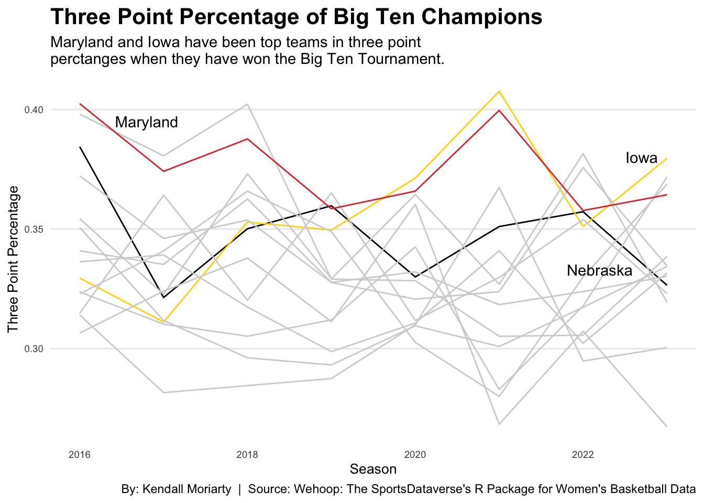
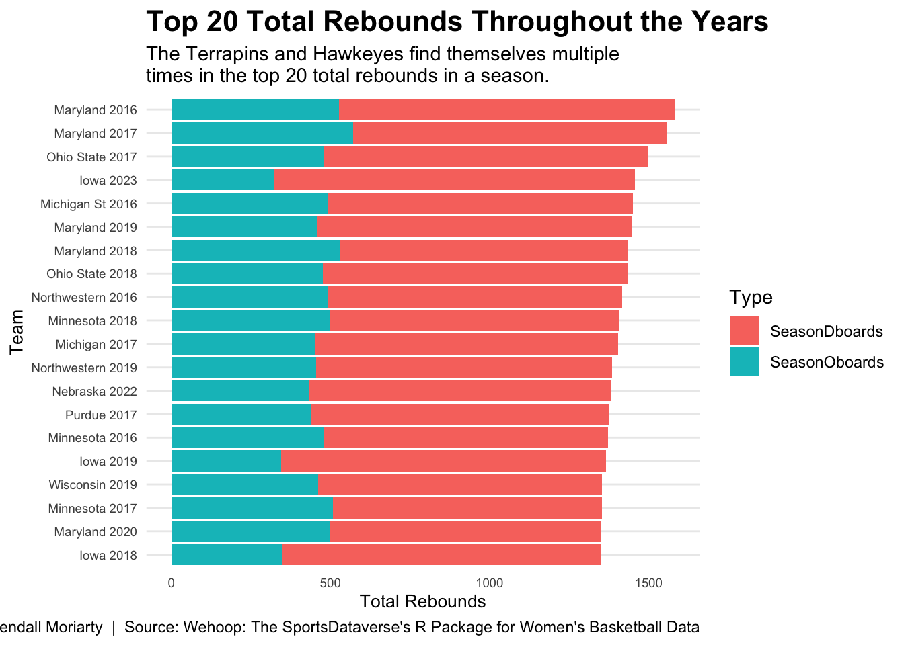
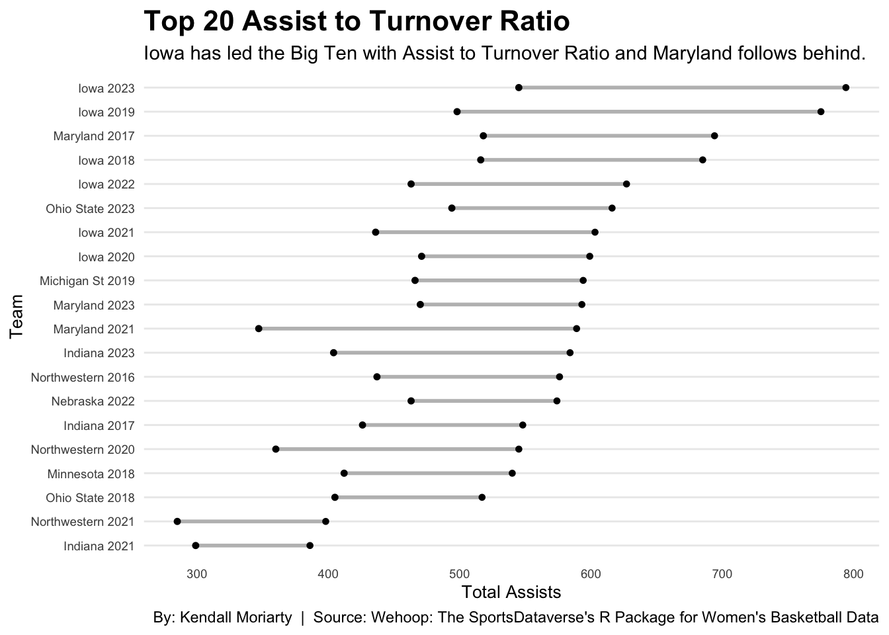

The Women's Big Ten Tournament determines the most elite team within the conference. For the past seven years, there are two teams that constantly take home the championship trophy. Those two teams are the Iowa Hawkeyes and Maryland Terrapins. Nebraska won the tournament in 2014 but has not made an appearance in the championship since then. It makes me wonder what my team needs to improve on to secure the conference title. What has Iowa and Maryland done these past years to get ahead of other teams?
Let's take a look at the data and compare the Hawkeyes and Terrapins to the rest of the Big Ten when it comes to three-point percentages.
Code
library(tidyverse)library(wehoop)library(ggalt)progressr::with_progress({ wbb_player_box <- wehoop::load_wbb_player_box(2017:2021)})wbb_player_box <-load_wbb_team_box(seasons =2023:2016) |>group_by(team_short_display_name, season) |>summarize(FG =sum(field_goals_made),FGA =sum(field_goals_attempted),Three =sum(three_point_field_goals_made),ThreePtAttempt =sum(three_point_field_goals_attempted),FTmakes =sum(free_throws_made),FTattempts =sum(free_throws_attempted),SeasonOboards =sum(offensive_rebounds),SeasonDboards =sum(defensive_rebounds),Assists =sum(assists),Steals =sum(steals),Blocks =sum(blocks),TO =sum(turnovers),Fouls =sum(fouls)) big <-c("Nebraska", "Iowa", "Northwestern", "Minnesota", "Wisconsin", "Illinois", "Purdue", "Indiana", "Michigan", "Michigan St", "Ohio State", "Rutgers", "Penn State", "Maryland") bigcon <- wbb_player_box |>mutate(threeptpct = (Three/ThreePtAttempt),fgpct = (FG/FGA),SeasonTotalRebound = (SeasonOboards + SeasonDboards) ) |>filter(team_short_display_name %in% big) |>group_by(team_short_display_name) nebraska <- bigcon |>filter(team_short_display_name =="Nebraska")illinois <- bigcon |>filter(team_short_display_name =="Illinois")wisconsin <- bigcon |>filter(team_short_display_name =="Wisconsin")maryland <- bigcon |>filter(team_short_display_name =="Maryland")iowa <- bigcon |>filter(team_short_display_name =="Iowa")rutgers <- bigcon |>filter(team_short_display_name =="Rutgers")minnesota <- bigcon |>filter(team_short_display_name =="Minnesota")indiana <- bigcon |>filter(team_short_display_name =="Indiana")ohiost <- bigcon |>filter(team_short_display_name =="Ohio State")michigan <- bigcon |>filter(team_short_display_name =="Michigan")michiganst <- bigcon |>filter(team_short_display_name =="Michigan St")pennst <- bigcon |>filter(team_short_display_name =="Penn State")purdue <- bigcon |>filter(team_short_display_name =="Purdue")northwestern <- bigcon |>filter(team_short_display_name =="Northwestern")ggplot() +geom_line(data=nebraska, aes(x=season, y=threeptpct), color="black") +geom_line(data=illinois, aes(x=season, y=threeptpct), color="lightgrey") +geom_line(data=iowa, aes(x=season, y=threeptpct), color="gold") +geom_line(data=indiana, aes(x=season, y=threeptpct), color="lightgrey") +geom_line(data=purdue, aes(x=season, y=threeptpct), color="lightgrey") +geom_line(data=wisconsin, aes(x=season, y=threeptpct), color="lightgrey") +geom_line(data=michigan, aes(x=season, y=threeptpct), color="lightgrey") +geom_line(data=michiganst, aes(x=season, y=threeptpct), color="lightgrey") +geom_line(data=ohiost, aes(x=season, y=threeptpct), color="lightgrey") +geom_line(data=pennst, aes(x=season, y=threeptpct), color="lightgrey") +geom_line(data=minnesota, aes(x=season, y=threeptpct), color="lightgrey") +geom_line(data=maryland, aes(x=season, y=threeptpct), color="#E03A3E") +geom_line(data=northwestern, aes(x=season, y=threeptpct), color="lightgrey") +geom_line(data=rutgers, aes(x=season, y=threeptpct), color="lightgrey") +geom_text(aes(x=2022.7, y=0.38, label="Iowa"), color="black") +geom_text(aes(x=2016.8, y=0.395, label="Maryland"), color="black") +geom_text(aes(x=2022.2, y=0.333, label="Nebraska"), color="black") +labs(x="Season", y="Three Point Percentage", title="Three Point Percentage of Big Ten Champions", subtitle="Maryland and Iowa have been top teams in three point \nperctanges when they have won the Big Ten Tournament.", caption="By: Kendall Moriarty | Source: Wehoop: The SportsDataverse's R Package for Women's Basketball Data") +theme_minimal() +theme(plot.title =element_text(size =16, face ="bold"),axis.title =element_text(size =10),axis.text =element_text(size =7),axis.ticks =element_blank(),panel.grid.minor =element_blank(),panel.grid.major.x =element_blank())

The two teams have led the Big Ten Conference in three-point percentages when they have won the tournament. Nebraska can be found in the midst of all the other teams in the conference. The Cornhuskers need to improve on shooting parentages beyond the arc to help their chances at a Big Ten title.Iowa currently leads in three-point percentage with college basketball star, Caitlin Clark.
Another key component during season play is rebounding. Offensive and defensive rebounds can determine a game. Did Iowa and Maryland lead in rebounds when they won the tournament?
Code
bigstacked <- bigcon |>mutate(teamseason =paste(team_short_display_name, season)) |>ungroup() |>top_n(20, wt=SeasonTotalRebound) |>select(teamseason, SeasonOboards, SeasonDboards) |>pivot_longer(cols=-teamseason, names_to="Type", values_to="Total")ggplot() +geom_bar(data=bigstacked, aes(x=reorder(teamseason,Total), weight=Total, fill=Type)) +coord_flip() +labs(x="Team", y="Total Rebounds",title="Top 20 Total Rebounds Throughout the Years", subtitle="The Terrapins and Hawkeyes find themselves multiple \ntimes in the top 20 total rebounds in a season.",caption="By: Kendall Moriarty | Source: Wehoop: The SportsDataverse's R Package for Women's Basketball Data") +theme_minimal() +theme(plot.title =element_text(size =16, face ="bold"),axis.title =element_text(size =10),axis.text =element_text(size =7),axis.ticks =element_blank(),panel.grid.minor =element_blank(),panel.grid.major.x =element_blank())

Maryland and Iowa can be found multiple times in the top 20 rebounding teams. In 2016, the Terrapins dominated the boards having 1056 defensive rebounds and 526 offensive rebounds. They continued to win the Big Ten Tournament that year beating Michigan State by 16 points.
Nebraska can be found once on this list from their 2022-2023 season. With the addition of Alexis Markowski, the team has started to prioritize rebounding. The Cornhuskers will need to continue to secure rebounds moving forward into the new season to help their chances in the tournament.
It Is important to look at teams assist to turnover ratios. Are they sharing the ball well? Are they creating good looks at the basket? How many times did the team give away the ball?
Code
turnoverassists <- bigcon |>mutate(teamseason =paste(team_short_display_name, season)) |>group_by(teamseason) |>summarise(TotalTO =sum(TO), TotalAssists =sum(Assists)) |>mutate(assistturnover = (TotalAssists/TotalTO)) |>top_n(20, assistturnover) |>select(teamseason, TotalAssists, TotalTO)ggplot() +geom_dumbbell(data=turnoverassists, aes(y=reorder(teamseason, TotalAssists), x=TotalAssists, xend=TotalTO),size =1,color ="grey",colour_x ="black",colour_xend ="black") +labs(x="Total Assists", y="Team",title="Top 20 Assist to Turnover Ratio", subtitle="Iowa has led the Big Ten with Assist to Turnover Ratio and Maryland follows behind.",caption="By: Kendall Moriarty | Source: Wehoop: The SportsDataverse's R Package for Women's Basketball Data") +theme_minimal() +theme(plot.title =element_text(size =16, face ="bold"),axis.title =element_text(size =10),axis.text =element_text(size =7),axis.ticks =element_blank(),panel.grid.minor =element_blank(),panel.grid.major.x =element_blank())

The Hawkeyes can be found five different times on the dumbbell chart, meaning that they are sharing the ball well with fewer turnovers. Last season, they had 794 assists and 545 turnovers which led the conference in assist to turnover ratio. Iowa went on to win the tournament for the second year in a row. Maryland follows behind Iowa in this category by finding themselves three times on the chart, two of which were years they had won the tournament.
The Iowa Hawkeyes and Maryland Terrapins have exceled in three-point percentage, rebounding and assist to turnover ratio. These three categories foster Big Ten Tournament Champions. Nebraska needs to improve in these area if they want a chance, but they seem to be on the right track.